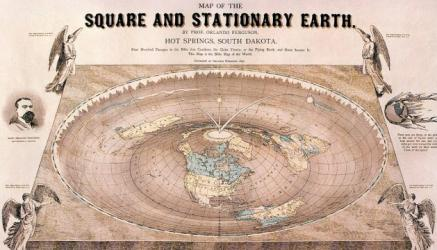

Certains platistes avancent l'idée selon laquelle la Terre, en forme de disque, serait entourée
d'un énorme mur de glace afin que nous ne puissions pas tomber dans le vide une fois arrivés à la
limite de la planète.
Ces derniers vont encore plus loin en expliquant que les gouvernements
nous cachent la vérité (à savoir que la Terre est plate) en affirmant que personne sur Terre n'a
jamais traversé tout l'Antarctique.
Or c'est faux !
Nombreux sont ceux qui se sont aventurés
dans la traversée de l'Antarctique.
Certes, le faire sans aucune aide est un véritable défi
mais prenons par exemple le Pôle Sud de l'Inaccessibilité, le point de l'Antarctique le plus
éloigné de toute côte.
On y trouve une station de radio, un ancien laboratoire de recherche
soviétique ainsi qu'un vieux buste de Lénine..

Le Youtubeur et théoricien D. Marble a déjà demandé : si la Terre est ronde,
alors comment se fait-il que nous pouvons voir des planètes entre la Terre et le Soleil
la nuit ?
Autrement dit, ce trentenaire se demande comment il est possible de voir
Vénus et Mercure en pleine nuit.
C'est un peu de la mauvaise foi car, même si on peut
distinguer ces deux planètes au lever et au coucher du soleil,
celles-ci ne sont tout simplement pas toujours placées entre nous et le Soleil.
Pour rappel, toutes les planètes ne sont pas parfaitement alignées et se trouvent sur
une orbite différente à une vitesse différente !